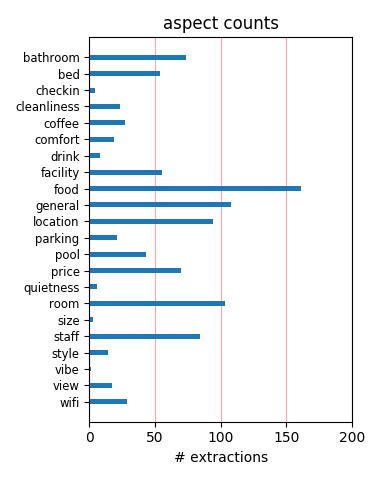
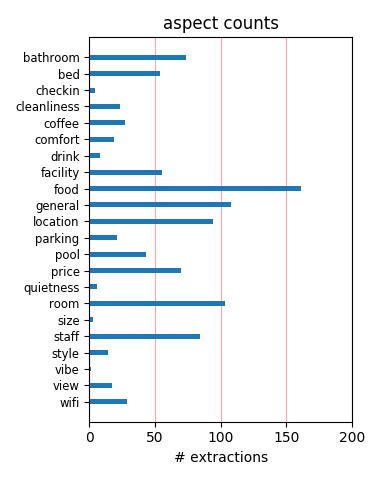

We didn't have a car so it worked with the shuttle to the parks (although it took a really long time!) the rooms are ok the service is ok the breakfast is ok. The location is really good, it is across the street from a supermarket restaurants and other useful things.
This was a nice place to stay for the money. Rooms were clean, grounds were clean, staff was friendly. We had no problems. Continental breakfast was a little boring, could use more variety, but it was ok none the less. Could watch disney fireworks from upper balconey.
the room was ok for the money as was the property. the continental breakfast was ok also. a sign in room states free local calls. this was not true as you needed to dial the area code just to make a local call. over $12.00 was added to our room bill due to the "free local calls".
We had both Cockroaches and bedbugs in two seperate rooms. When we complained, the hotel manager came into our room, stomped on the cockroach and said goodnight. When we demanded another room it had bedbugs in the pillows. Complained to head office and they didn't even respond. STEER CLEAR!!!
check in was fast & friendly,location is close to shopping,10 min from disney,15 min from universal & seaworld,1 hr from daytona & cape kennedy. hotel staff is fast,efficiant,& most of all friendly, i would not recommend this hotel to a friend,but i would recommend to all my friends thankyou Eugene V .
its close to everything if you drive to orlando this is the spot and make sure to get your park tickets next shopping center over from the hotel where the dragon is you cant miss it universal only 60.00 bucks a 30.00 savings, i love the 3rd night free and the pool is heated and feels great in may at night .
The room was very nice,roomy and clean. The property though was not nice at all. Landscaping was terrible,elevators were dirty and anywhere outside of the room was not well maintained. Luckily we only stayed one night. I would highly suggest spending more money to stay at a Disney property or a more expensive hotel.
Very Dirty! All the towels have stains on them, some even have blood stain on it. Bedsheets were dirty. The Bathroom is the most disguesting area. Scum on the showerhead, bathtub, toilet etc. You walk on the carpet just feels so sticky.. About the location, compared to the other on celebrations area, seems not so close to those theme parks.
My wife and I just returned from Continental Plaza Hotel from a week's stay. We loved it, nothing fancy but nice. The rooms were not modern but cleaned. The continental breakfast was o.k.(toasts and cereals).The location of the Hotel is not too far from theme parks. We had a car but their is a shuttle for the Theme Parks. We had a very nice stay.
I didn't appreciate the bedding at all - the blankets were old and pilled and therefore I could not trust the cleanliness of the room. There were tiny ants on the counter around the sink area. The staff was friendly enough. I thought the included breakfast is indicative of poor American eating habits - just a bundh of donuts and not a piece of fruit in sight.
3 times to this 2 star hotel,it meet my needs but metro shuttle service should be terminated,they were 1.5 hours late and desk could not get a hold of them.breakfast was not much but ok for on the run.my room next to office so had good internet.only paid about 30.00 per night so very low cost.pool was clean on this trip.close to shops and restraunts.so i will stay again .
Their "continental breakfast" was stale white bread and cornflakes. There were LOTS of bugs in the rooms including ticks and spiders. We found old, moldy juice bottles under our beds. Tenants were wandering the corridors and parking lot making noise at all hours of the night. I will say that the heated pool was very nice and the staff were pleasant, but I will never stay here again.
we really enjoyed our holiday at this hotel, it was far better than we expected for the price we paid. Our room was cleaned daily, fresh bedding every day, the room was bug free and we had no proplems whatsoever and would have no hesitation about staying at this location again. There were plenty of resturants nearby plus a supermarket for essentials, we would definately recommend this hotel to our friends
We have just got back from staying at this hotel for 2 weeks. It was very clean and our room was ok. the staff were very freindly and the only bad report that we have is with the shuttle busses. We didn't want to drive so we relied on these and they took ages and were in a very bed condition. however this is not the hotels fault but Disney as they put on the transport. All in all a great budget place to stay
Stayed at hotel in 2008. At that time they were trying to sell off the remaining rooms to investors. It was clear upon return in Oct 2009 that standards had slipped majorly. Breakfast was terrible, cleaning was very average. Our Room was damp and slimy. We checked out after 2 nights. I wouldnt even stay here if they offered free rooms!! Free internet is only in Lobby. AVOID THIS HOTEL!!!! Its not worth it!!!!
I have read some bad reviews of this hotel and do not agree we stayed here in october this year and would go back every year it was clean and had everything we wanted on site the staff were always helpful and room was always clean early in the day so if we went back for lunch it was alrewady done the hotel is in the perfect spot near disney and good easy place to get to the malls and shops i didnt find one bad thing about this hotel it was perfect
I really thought this hotel was nice. It was easy and simple, a place to hang your hat. Its really close to everything in Disney.... The rooms were clean, quiet, had HBO, and good air conditioning. Breakfast was free, and you can't beat free! (especially because the Shoneys and Denny's nearby are NIGHTMARES!) Take my advise and eat the hotels simple continental breakfast and save yourself a headache :) The hotel was overall GOOD with friendly staff...
This place needs a total refurb, the electrical plug sockets aren't fixed to the wall so plug in at your own risk, lasted only 3 nights(out of &) and had to move hotels, Our room 217 was dirty there was cobwebs on the ceiling and an iron mark in the floor, at first glance it didn't look too bad but look around and it's DIRTY. Breakfast is a free for all,only one toaster for all the guests, we had to take ours back to our room as never any where to sit.
stayed here for 14 nights. check in took couple of minutes. room on ground floor opposite pool . ok alot of flies but they were everywhere (front of car was covered with flies) good and clean room maid service perfect. pool very clean . breakfast about ok no noise at night grounds kept very clean. we saw an ant on the path outside our room do readers think we should complain i think some people expect 5 star for 2 star price we came with airtours on a late booking did all the tourist things and had a perfect time
This motel was better than the reviews stated in the last six months, we were pleased with the service, cleanliness, and price. If you're going the WDW, there isn't much time to spend at the motel, and this one is perfect for the task. I especially enjoyed the quiet nights, even though it's next to a busy highway. We got a room close to the lobby, but on a floor above, so the WiFi worked n our room, no need to go downstairs! I would certainly reccomend this property to anyone who desires a comfortable "sleeper" at a great price
I have just been reviewing some of the comments by some of your members, and feel that I should add my wife's & my own remarks. Last minute booking in June through First Choice Holidays from England allocated this Hotel to us. For the price we paid for the Package (including Star Class Air travel & also a Hire car) we were pleasantly surprised at the quality afforded us here both the accommodation and definately the attention of ALL OF THE STAFF. Excellent !!!! On that occasion we stayed for 2 weeks. WE INTEND TO RETURN THERE AGAIN IN THE NEAR FUTURE.
This hotel is great for a good value stay in Orlando when visting the theme parks. I would recommend it for anyone who has a hire car as it is quite close to all the major attractions by car but quite difficult to get around without a car. Breakfast, standard of rooms and pool were all far better than expected - I was very impressed. Don't take the free shuttle to Disney though as this is the first hotel on the pick up route and you'll spend an hour going round the other hotels picking people up only to drive past this hotel again on the way to Disney!
We had planned to stay for 6 days, however, we got robbed half an hour after check in. The manager on duty was unfriendly and didn't even offer help, until he finally called the police. After the sherrif arrived nobody even made it to our room to check on us or offer a different room. We left the next day after a nightmare night and overcrowded non eatable breakfast that you had to stay in line for half an hour. The rooms were stuffy and disgusting. I would never ever go back there again. Even though it was a deacent price, but below standard even for a cheap room.
2nd Time Staying Here FANTASTIC VALUE Plus Added Bonus OF CONTINENTAL BREAKFAST STAFF Friendly ROOMS Reasonably Clean with Large TV Clean Sheets Safe IN Room Iron & Ironing Board Towels Changed Daily Heated pool with Towels Supplied free Washing Machines Dryers on site Free Ice Machines on all Floors Near Main Disney Area Perfect For All Areas Free TRANSPORT TO PARKS AND SHOPPING. This is a 2 STAR MOTEL Some Guests Expect All The Extras of a 4 STAR HOTEL If so Then do not STAY HERE This is perfect for the HARD DAY At the PARKS.WHAT MORE DO YOU WANT. HOPE THIS HELPS
Ok, so here goes, the cheap price lured us into staying here, we thought the location was great, but everything else was just horrible. First off, the bathroom lights didn’t work, the carpet was filthy(soles of your feet will turn black..guaranteed) the AC unit didn’t work well, and to top that off, hotel is infested with cockroaches. Please do yourself a favor, do not stay here. Im only posting this because I don’t want you to make the same mistake we did, don’t waste your hard earned money here, you couldn’t ask me to come back and stay for free, please beware!!!!
An excellent budget motel, better than many in this area. Room was clean and beds comfortable. Beware the hotel's own website which says "All guestrooms are handsomely and newly furnished with Refrigerator, microwave....". The fridge and microwave are not available in 'standard' rooms. Breakfast room is a little small for the number of guests, and resulted in a scrum every morning, but the breakfast itself is adequate to start the day. Reception staff mostly very pleasant and helpful except for one older woman who was abrupt and unhelpful. Would certainly stay there again.
This is passably the best deal in the WDW area I have been to WDW over 50 times staying everywhere from the Grand Floridian to the Gator Motel this is the best deal I have found the rooms were clean (they even steam cleaned the carpets mid week) we had a view of Expedition Everest from our room the housekeeping staff was thorough and friendly as well as the front desk attendants the continental breakfast was no more than doughnuts some muffins and toast juice, milk and coffee I was traveling with a 1 and a 3 year old and didn't have to worry about them crawling on the floor
Has to be the worst place I ever stayed. Booked for 4 nights, could not hardly make it through the first night, would rather have slept in the car. The carpets were nasty, the bathroom was dirty and nasty, nold was growing on the desk chair, saw 3 bugs, the furniture was worn out, dirty behind the bed. Dont walk - RUN no matter how much money you save. Booked through AARP senior travel and paid in advanced. We left not not knowing if we would get a refund or not, didn't matter,,,,,,,,get the picture? It was terrilble. AARP did give us a refund for nights not used. Bill / Tulsa, ok.
If you bear in mind it's a value 2* motel it's not bad. We had requested a king size bed but when we got there none were available. No problem, come back tomorrow and you can change room. The breakfast is plain cereal, toast coffee and juice but we wouldn't want more than that anyway. The place was clean, towels and sheets were changed. Ok so the furniture was a bit tired but stuff worked, plenty of hot water and there was a microwave and fridge in the room. It was a good location, plenty of restaurants nearby and easy access to major routes The heated swimming pool was lovely with fresh towels piled high.
We stayed at this hotel since it was reasonably close to the Disney parks. In fact we were able to see the fireworks at night from our front door. The room was nothing outstanding. It was just a basic room. It was pretty easy to get around to good restaurants and stores. It was almost directly across the street from Outback Steakhouse. One block away from Golden Corral too. One block to Dennys and Walgreens. We were there for three nights. We flew in from California to go to one of the theme parks while waiting for time to board for a cruise from Port Canaveral. The room was comfortable enough. Nothing outstanding.
We stayed at this hotel in December 2006. We thought it would be pretty bad for the price we paid, but we were very surprised as to how much we like this hotel. It was basic, but good. We were supposed to stay for 6 nights, but extended our stay to 9 nights. Pros: - The room was spacy & clean - The pool was warm and fun to swim in - Friendly staff - Good location (next to some great shops!) - Cool birds (i think they were cranes) came to visit outside the hotel rooms every day! Cons: - Breakfast was very basic and sometimes it was hard to get a seat. We will be staying in this hotel again the next time we travel to Orlando!
I stayed in this hotel for 5 nights in the early of Oct 05. The bedroom and bathroom were nice and clean. The breakfast provided by the hotel was very delicious. There is a self-service laundry machine on the ground floor at the hotel. I didn't try it myself. The hotel offers free shuttle bus to the theme parks also, but the bus departs from the hotel at 8:40a.m. every morning. I took the free shuttle bus to the theme parks and expected to get to the entrance before 9:00a.m. the official opening hours, but I happened to arrive at the entrance there at about 9:30a.m. or 10:00a.m. I could not complain about it. It is just a free service.
We stayed in this hotel for 2 weeks. We were on a budget so this place was perfect for the price. The hotel itself was great!! It was cleaned everyday, the safe was free (bonus) and the beds were the most comfortablist (?) beds I've ever slept in in a hotel. We never went for the free breakfast as there was never a table free but there's a Ponderosa just down the road. It's not the best location as you do need to drive everywhere but that was all part of the fun for us!! In saying that, just across the road you have TGI Fridays, Subway, supermarkets, mini golf and a few other shops. Overall it was a great base for a fun packed holiday!!!
I checked in late Friday night with my wife and two kids. We came into town to get an early start the next day at Disney. We usually stay on International Drive, but decided to give this hotel a try because of its proximity to Disney. What a nightmare! The bedsheets had stains that looked like bodily fluids from the night before. I slept on a towel with my clothes on. The towel had dead mosquitos on them. They looked like the towels my mechanic uses at his shop. Disgusting! I have stayed at many 2 star hotels, but this one was the worst. We slept 6 hours and left as quickly as possible. Never again. I would not stay here if it was free. Stay away!
Booked this hotel as part of a package through Hotwire. Web site with photos, etc. of this hotel looked pretty good. This is our 4th trip to Orlando in a row, and all other accomodations were top of the line, until we entered the Dark Zone. We thought we had entered a third world country. After travelling around the world its the only place I ever encountered that the vermin would have moved out of. Other reviews indicate a terrible odor We experienced the same and it was so bad we were nausiated. It cost us a one-night stay penalty to get out of it but it was well worth it. Bottom line - do yourself a favor: NEVER STAY at this flea bag of a hotel.
I needed a place to stay for 3 nights before I could get into my villa rental and at a total price of $123 this suited me very well. Being situated right off Hwy 192 makes this location extremely central. I was in Disney World in less than 10 minutes. The rooms are your basic hotel rooms - no fancy flat screen TV or dozens of channels - but it's clean and you have an elevator so you don't have to carry your luggage up the stairs. The pool didn't look terribly promising and isn't very private, so I didn't use it. I never made it to breakfast on time so can't comment on that. This hotel was fine for a short while but I would not have wanted to spend my entire 10 day holiday here.
We have been to this complex a number of times. It has always been perfectly adequate and acceptable for our overnight needs. It is clean and reasonably comfortable, convenient for many eateries and supermarkets and for access to the interstate highway. It is good value for money although you have to pay a small amenities charge on top of your reservation cost. There is a very basic breakfast provided as part of the price - cereal, toast, coffee. The staff are pleasant and if there is a technical problem, maintenance arrives promptly. We were a little disappointed that the water did not seem as hot as in our previous visits, on our most recent visit - maybe we were just unlucky !
This hotel has a serious bed bug problem and they are not willing to take care of the issue. When it was brought to their attention the front desk people were very rude about the problem and the maintence man tried telling us they were "sugar ants" We were promised several different things just so we would not report them to the health department or write a review. We did not receive anything from them except an awful time. The staff was exteremly rude, rooms out dated and smelled! While we were at the front desk complaining about the bed bug problem another guest came in very angry becasue the house keeping lady stole his Rolex watch while he and his family went out to the pool!
When we arrived, although the front desk staff could not find our reservation, I showed them my confirmation sheet and they fixed everything. The very kind and helpful Dario, who was at the the front desk that afternoon, honored all my requirements and we were more than happy with the room assigned. The pool was warm and clean. The breakfast was good, more than most free continentals. The housekeeping couldn't have been more helpful . My kids just couldn't wait to see how their stuffed animals would be tucked in by the staff . For the price we paid, what more could you ask for? We are planning to stay there again for sure and we can only highly recommand the Quality Inn Maingate West !!!
At the end of the day you only get what you pay for. This is the 3rd time my family have stayed in this hotel & yes it does need a revamp & is a bit worn & tired but the staff are friendly & provide a good service. Clean towels everyday, rooms & beds made everyday. Yes I did see ants in the sink but I live in Spain & have ants in my kitchen cupboards so that didn't worry me as once they are in the walls they are hard to get rid of. I was disappointed that there was no breakfast, eventhough it was just toast & cereal it was a bonus, but there are many places to eat nearby. The location to Disney is ideal & for the amount of time spent in your room I find this hotel ideal, at a bargain price.
The hotel was okay for the price. This is a place to stay for a long time but only to sleep and shower. The "Free" breakfast was only cereal, toast, coffee, and juice. By the way in the cereal there were ants. They do offer great deals on theme parks and car rentals. I loved that it did include: free parking, pool, laundry facility, free wireless, and free shuttle. I highly recommend Clearwater beach! The water is warm and the sand is very soft and white. There are dolphins swimming only few yards from the people but be careful because there are also sharks. One more thing, we asked for 1 king bed and got placed in a room with 2 twins. Didn't think is was worth the complain so just kept it that way!
Located 2 miles from Interstate 4 and one mile from Disney entrances, the hotel is ideal for those going to Disney. We had other plans and traveled 2,000 miles all week. The hotel is still clean and neat. Ample parking and the rooms were promptly made up each day. The pool was clean and warm. Lots of souvenier and other shops really close by. Small dining area and ice machines as well as a small shop on the premises. Many, many restaurants in the area. Don't forget to go to "Old Town" about 5 miles down the road. A hidden treasure of small shops with amusement rides that I didn't even know about ( I only drove by it over a dozen times) and it's mostly free! Would most certainly stay at this hotel again.
THE GOOD....Fast Check-in,Close to Disney, Free pool towels, Clean, safe pool, Easy walking distance to restraunts, Free basic breakfast THE BAD....Air-con was loud and slow, paper thin walls, not enough cupboard space, poor decor, small bathroom, no porter, Unreliable and not enough park transfers, Bad smells in room. THE UGLY....Unsafe exposed electrical wiring, Loud drunken kids on both weekends, No sercurity. Located on a loud busy road frequantly used by the local fire departmentand large lorries, Constant pestering from the ticket stand to sell you a timeshare and tickets. THE VERDICT...Very basic..This hotel needs to be knocked down and rebuilt...if your looking for a low cost quality hotel dont stay here.
The hotel stay cost about $100.00 to stay 4 nights through a promotion for free nights so I was impressed with the price! There was a very distinctive odor in the room, not sure if it was moldy or cleaning products or a mixture of both. In fact when I got back home even my clean clothes still had that smell on them! My papers and clothes also had a damp feeling to them. Bed was clean but there were small ants on the sink by the bathroom. We ended up changing rooms to a upper floor with a larger bed (we originally had 2 doubles). No ants, but still that same odor. Our tub had a cover over it and I was afraid to lift it up to see what was under it. Breakfast was disappointing but we usually just ate toast to get us going.
You can listen to all the moaning and whingeing about this hotel if you want but this is the real story. We stayed there (2 adults,1 child of four ) having previously stayed at the masters inn up the road. This hotel was great, if you phoned or reported a problem to the front desk someone turned up in under ten minutes to fix it. The pool was cleaned daily and the house keeping was excellent. Breakfast was better than i have had in any other American hotel and the staff were always helpful and cheerful. Superb location for Disney with a back road out of the hotel that cuts out all the queues on the 192. Would recommend to anyone. Its basic yes but what hotel isn't. For the money this hotel was great. Look forward to returning.
Location was great. Close to parks...free shuttle to attractions but buses get full fast, they pick up at other hotels along the way. Might have to wait for second bus. Walking distance to many restaurants and shopping. Breakfast included but no place to sit. People sitting outside on sidewalk or bringing it to there rooms. Coffee was bad. Dunkin donut down the street is really good. Rooms were cleaned daily meaning beds made and fresh towels if wanted. Tiny bugs in the sink and on countertops, couldn't leave food lying around. Rooms need major updating.....old. No place to lounge. Pool was good. Payed half the price for two attractions and one water park for four people going to a timeshare ??? for two hours. Well worth it $$$.
have stayed here many times now, an never have we complained once about anything because the rooms were great this year we even had a 4 ring hob, microwave, fridge, the room was kept so clean , clean sheets when ever we wanted towels clean every day the supervisor spoke to us every day asked if we needed anything had a smile every day we were there, how can you moan about this hotel its perfect, close to all the food outlets walgreens opposite you can walk to all the shops, what is there to moan about, if you want 5 star then go and stay in 5 star pay 5 star money bet you will moan then? you dont buy the room you just stay there for a short while STOP moaning and enjoy your holiday its a GREAT hotel i will be going back again in 2011
Got a great deal off of expedia to stay here for 6 days. Room was okay, worn but very clean. Here is where my problem lies. There is no fridge in the room, there is no coffee in the room, the safe in the room doesn't work. No alarm clock in the room. I mean what hotel have you ever been to where there wasn't a clock? They even charge to get ice for your room, $0.25cents. Also when I went to the lobby to get quarters so I could have a cold drink he told me he didn't have any. It was truly unreal. But they do give you free wi-fi, so that's something. The pool is nice and clean. It is located on 192 which is close to everything which is nice but I would say to stay somewhere else, somewhere with basic amenities for the same budget price.
just got back from 2 weeks at Qi, we just used it as a base to plan our disney wedding, we have stayed at the other 2 Qi's on I drive and this was by far the best, it had everthing you need around i.e dennys, walgreens etc, we could see animal kingdom from hotel so that give you idea of how close to disney, room was clean and cleaned daily, no problem with anyhting apart from what previous guests have said about limited seating for breakfast but no prob as we took it back to room!! Room had towels, pool towels (save on luggage!) free internet access, etc etc. if you want anymore information just E mail me!! P.s sanford airport hasnt got scales to weigh cases before you check in!! watch your weight guys, quite stricht on excess baggage $20 per kg...... cheers
We reluctantly stayed here one night., it was supposed to be for 7 nights but I could not wait to get out of there. Believe me this is not a Hotel it is a Motel, the 2 1/2 Star rating is being generous it is not worthy of 1 star. The rooms smell damp, musty, dark dingey look shabby and dirty. I did not feel safe here at all. We booked through First Choice and they really should not be selling this place to customers. We are not fussy people and we are certaintly not as one reviewer put it "moany Americans" we are from the UK and we just have standards and I would never stay in a place like this in Britain so why would you put up with it on holiday. There are much better places to stay in the area, I would suggest the well known chains. The "free continental breakfast " looked a joke.
We were given this room for free during our visit to Orlando. All we had to do was listen to a timeshare presentation, down the street, in order to get the room... we just had to pay the taxes. I'm pretty sure they gave us this hotel so we can compare the 5 star accomadation to this dirty location. Wife and I were given a room with 2 double beds, next to some car rental office. Don't know where the rental cars were located?!?!? Our toilet never flushed properly and the washrooms were dirty. Very limited tv channels, but the room is only used for sleeping... you have to visit the Theme Parks when in Orlando. The only okay thing about the hotel was the location. 5 minutes to Disney. 20 minutes to Universal. One thing to get rid of... the desk where they offer coupons if you visit their timeshare location!!!
We had the most terrible experience ever!! There is ants in the sink, crawling all over, when I complained, they said we can give you a "cleaner" room tomorrow. We gave them a second chance. When we came back after a long day in Disney's, we found more ants in the new room, that wa"sprayed" PLUS a toilet that was had dry feces on the seat. We definetely complained, but the counter staff gave us the choice of cleaning supplies to clean ourselves, because the cleaning staff is off at night time. That was outrageous!! We moved out after that incident, and did not get our money back for that night, as we did not comply to the policy on checking out prior to 11 am. It was just a disater!!, also Expedia did not help, we bought the package through them, and could not get a refund for the night we did stay. Never ever use them again!
The hotel is not very hard to find. The directions given by the hotel staff were very clear. Once we arrived, the staff was friendly and welcoming with a guest service stand willing to help. The person at the front desk met all are requests... a quiet room away from the traffic. The room was spotless, very very clean. The breakfast was ok. My kids loved the waffles though... And if you are planning on having breakfast, as a tip, come early!!! everybody likes to sleep in and come at once.... i understand this is not the hotel's fault. The transportation to the parks was a plus too, but there is only 2 trips to disney and 1 to universal and sea world, which is great if you dont have a car, but i recommend driving... there should be more... Also... there are plenty restaurants accross form the hotel to dine inn for a whole week....
I looked at several hotels in the area that were budget priced. I read reviews of many of them before choosing this hotel. I got what I expected for the price and have no complaints with the room. The room was clean, linens fresh and the air conditioning worked fine. The breakfast area was probably slightly small consdering the number of people staying at the hotel. Service was promptly cut off at 10 AM although several guests were still trying to eat. Not a big deal, but a little more compassion might have been shown given the amount of guests. My biggest complaint was the lack of internet service. Service is only available in one of the three buildings. It meant you needed to sit in the lobby/dining area for wireless service. But overall, you are not paying for the Ritz. The staff was great, the cost reasonable, you could do worse.
we are just back from our stay here booked through first choice. I would not stay here again! We had a ground floor room on the opposite side from the pool, it smelled of damp and there was mold on the toilet wall. The beds & towels were clean & as we were only there for a week & hardly spending any time in the hotel then we just put up with it.(the rep was unable to come around til 3 days into the holiday anyway!) It was just kind of old/dated & grimy! I think the holiday company are really ripping folk of with what they charge if you get this hotel. Luckily we had a car so did not have to rely on shuttle buses. The hotel is actually in a good position on the 192 highway, really near to disney & close to lots of good places to eat - red lobster was the best it was just across the road. I would not recommend this hotel really - it is very basic, so is the breakfast
We went to the Quality Inn in June as part of a First Choice package holiday. Unfortunately Florida was experiencing almost record rainfall levels resulting in us spending more time than would be expected at the hotel. The rooms are small but clean and we could have no complaints about the house keeping. The continental breakfast was a bit of a scrum. Often all the tables would be full and the bread was often finished before the breakfast session finished. The pool was nice but there was a lack of sun loungers resulting in a queue at 9.00am when the pool opened to get one. The hotel staff then decided to paint the pool surround area resulting in one side or another of the pool being closed on four different days while the paint dried. After a week we decided to move to a nearbye townhose on the Emerald Isle estate and enjoy the extra space that this type of accomodation gave.
I originally thought not too bad.... boy was I wrong. I had to keep the bathroom door closed at night, there were noises coming from the fan even when it wasn't on. The bedding was torn and my feet kept getting caught in the holes. I went down to get some ice and found I needed to return to the room to obtain a quarter... ice was not free. The pool was not user friendly... the bugs carried you away. If you want to watch tv... forget it. There were maybe six channels available... The best part was on the way home, I found a creepy crawly thing in my purse. It was sooo much fun going thru everything I had taken outside my home before entering with my belongings. Won't stay there again! Be warned, I needed the internet for my school work, you must go to the lobby it is not available in the rooms. The refrigerator froze everything. The microwave took 6 min. to reheat a slice of pizza...
We just returned from a week's stay, and overall quite satisfied. We were given a room at the back of the hotel, which was a little beat up (chipped furniture, door paint) but very clean and had a new carpet, tub, mattresses etc. From what I could see the rooms across from the pool looked nicer so if I would try and get one of those if you could. The housekeeping staff were excellent and kept our room spotless. Front desk was also very courteous and helpful whenever I called. We were booked at the hotel as part of a package deal so had no choice on where we were staying and from reading the previous reviews were quite worried but we certainly didn't encounter any issues with vermin in the rooms. For the money we spent on the package (little), I was just happy to have a clean room, in a decent location and so was satisfied. The location was very good - just a five minute drive to Disney.
My partner and i booked this hotel three weeks before arriving. it cost £530 for both of us. I visited this website after booking the trip and thought i had made a dreadful mistake. After ridiculous delays at Gatwick we were tired and a bit grumpy and were not looking forward to the motel. We changed our minds instantly. The staff were friendly and we were in our rooms within 10 minutes. The rooms were clean, tidy and the air con made a great difference. The rooms were cleaned every day and we had no problems whatsoever. The motels website states that fridges are in the room, but there was not one to be seen. To solve this problem we went to the supermarket across the road and paid two pounds for a polystyrene one, filled it with ice from the motel and away you go!! All in all it was a great break, no complaints whatsoever. You will not pay a massive sum to stay here but what you get is great value for money.
My wife and I booked this hotel, sight unseen, due to some great internet pricing. We were pleasantly surprised by the location and quality of the hotel. Like some other reviewers have stated, there are a couple of shortcomings...the "Continental Breakfast" is stale bread, lousy toasters, cereal, coffee and orange juice. The wireless internet--somewhat annoying to have to go to the lobby, since it doesn't reach to the rooms. Our ice machine was broken...beyond all that, though, we got a non-smoking room 2 miles from the Disney Main Gate for about $30 a night. The pool was clean, the room was clean, the staff was friendly...I can't ask for anything more, and certainly not for the small amount I paid. The MAJOR downside to this hotel, in fact, is that you have to make a u-turn slightly down the road to get to Disney....depending on traffic, THAT can be hazardous. All in all, though, we WILL consider coming back next time.
This hotel is located near Disney World (20 min. drive, w/ slight traffic) and W Irlo Bronson Highway (192), where there must be 100s of restaurants and attractions you can go to on that highway. A car will definitely be handy. The hotel provides scheduled shuttle service to and from the major theme parks but the schedule is the problem, it leaves you little time to enjoy the sights and you probably won't finish any theme park if you were to follow the shuttle's sked. The room was very basic, plain, old and worn. There were molds on the toilet. Complimentary breakfast was mediocre, I'd rather go to some nearby restaurant's breakfast buffets for $4++/person. You get what you pay for, and it was cheap but that's just about it. Just use this hotel as a base for the theme parks, save your money too and buy discounted theme park tickets from Wal-Mart. I couldn't trust some of the ticket sellers as they usually advertise that they buy "unused tickets", too risky in my opinion.
I was worried about my stay at this motel after reading reviews. Once I arrived though I was more than happy with my choice of accomodations. I knew it was a budget hotel and was only expecting that. It was simple, great location. The shuttle service (free) was on time (give or take 10 mins) to the theme parks. Breakfast is only toast, 2 choices of cereal, jam, ornage juice & coffee. I was perfectly content with the selection. I 'm not a huge eater so I did'nt need a nasty greasy morning breakfast. The orange juiced was bad & watered down, but I only drank coffee which was good. I was unable to purchase base theme park tix at the hotel so I did so at the park itself. My room was 231 it was always clean, shower worked fine, lots of hot water, no bugs, everything worked. The room was supplied with a iron & board, soaps & shampoos, plenty of towels which were replenished every day. plastic cups, ice bucket. For me this was the perfect budget hotel with no perks. I would definietly stay again.
I arrived in this hotel at 2am in the morning,went in to our room and the rooms i booked was not right and there was no kitchen,it stunk of mould,the carpet was dirty,had no wardrobe and no fridge.Went back to reception to complain and the man said there was no room to be moved to and no manager to talk to,i told him we would not be staying here as it is dirty and he offered me another room to look at(after telling me there was no other rooms avaliable),so at 2am we am looking at other rooms after a long journey there.The rooms were no different and we was so tired we said we would have to stay where we was and speak to the manager in the morning.In the morning we looked around the room and realised the sides of our beds were covered in mould,carpet was old,dirty and musty,coffee perculator did not work,a lamp did not work,our door when closed had a gap in it and did not feel safe,so had to take valuables out every day with us.Didnt even attempt to eat in the cafe area.WOULD NOT STAY HERE.DISGUSTING!!!!!!
First off...for $36 a night it was ok. Had we paid the $76 a night rate if we stayed any more days, it would have been a monumental rip off. The good...the place was close to the main entrance to Disney and lots of food choices nearby to eat. The room was clean and had plenty of towels. Hummm. ..what else good? Guess that's it. The bad..the AC unit ran for one minute and shut off for three...all night long. The fan was set to high speed and couldn't be changed. The continental breakfast was a joke. Three types of cereal, toast and waffles to eat, milk, coffee and juice. No Danish, no fruit...nil, nada, nothing. The breakfast lines were out of sight. Worst "free" breakfast I have ever had. No in-room coffee makers, either. Also, they hit you up with some kind of $1.86 a night fee tacked onto your bill...surprise! The evening clerk was a little weak in communicating in English so I really didn't get an adequate explanation of the charge. There are many, many better choices for this area of Highway 192 near the Disney property. I won't be back.
Firstly we could not find the hotel, we needed to go a bit further down on the 192 than we were doing but when we finally got we got checked in very quickly, be warned the reception staff are very rude and unhelpful!! The room wasn't really that bad we were on the smoking floor (3rd floor) it was just very basic with a very small bathroom, there were always little ants around the sink area but no matter how many you washed away double the amount would come back. The maids would come everyday with lots of clean towels and make the beds. Aircon was a god send as it was so hot but you definately need earplugs for the night time as you will not be able to sleep with it on. They do a breakfast which does get very busy so all you need to do is take things up to your room, i think we managed to sit downstairs 3 times in 14 days. A car did get broken into when we were there so make sure you leave nothing on the seats. All in all i would stay there again but would request having a fridge as all of the rooms do not have them and the ice machine played up alot.
I booked this hotel as it was cheapest available. Having read some of the reviews I was not expecting much. When I received my room key and I entered the room I thought WOW. It had one double bed with a sofa and chair.It had a microwave,fridge,a safe and TV. The room was clean and free from any smells.The bathroom and vanity area were clean as well. The hotel provided a free basic breakfast of Coffee,Tea,Orange Juice,Toast and Corn Flakes. I am an early riser(6.30 to 7am) and so I had the breakfast area to myself but did get much busy later on.I found all staff to be very helpfull There are a few restaurants and fast food places within walking distance and a Walgreens not far away There is a shuttle bus to Epcot (you need to use Disney Transport to get to other parks) it leaves at 8.45am and about 1pm. The return is 8.45pm and 10.15pm from the Ticket and Transportation centre and 10.05pm from Epcot, You can also use Lynx buses 55 and then 56 to get to and from Disney Ticket and Transportation centre. If you are on a budget I would recommend this hotel.
When we first arrived, our first impression was, great and when we got into the room it was even better as we had a fridge, microwave & Tea & Coffee facilities (We did how ever pay extra for this pleasure of about £1 a day.) The bonus was that there was a FREE digital safe which is a must any where to travel. Disregard all the negative reviews as you will always get moaning *************. The breakfast was better than other free breakfasts served at other motel like hotels in florida. Eat as many waffles as you can. Remember the sypup is quite fattening but look out for the basket which has low fat/sugar syrups. The staff are friendly as well. If your phone charger does not work (like mine) go to the reception and say that you left your charger the last time you stayed any they will be more than happy to take you to a room full to the roof of 2 pin phone chargers, it may take you hrs. free ice is available from the corridor and laundry is available. The pool is nice and quiet and free towels. The pool over looks the lake. (watch for the aligators kids) Happy Holidays
We arrived at hotel at 1pm was told to come back at 3 because no rooms were available at that time. Our room had a musty smell, and when we woke the next morning there were ants on bathroom floor and on bathrooom walls. When we went to the front desk they told us it was because of us having sweets in room of which we had none. Maintenace came and sprayed floor and when we woke the next morning there were ants on nightstand, dresser, bathroom walls and shower. After 3 days they finally moved us to another room which smelled better, but woke up to find more ants in the bathroom we called the front desk again they blamed us on our sweets which we still had none and they came and sprayed walls, floors, shower and under and behind all furniture and finally on 4th day of our 7 day trip finally no ants . The breakfast is a joke of cold cereal and toast, no clock in room and staff is very unprofessional one of which was sleeping in back room and you had to bang on the side door to get him to come to the desk yawning and rubbing his eyes. I would definatly not stay here again.....
Cheap hol allocated on arrival, location very good for all parks using the I-4 also if you don't want to drive out to eat, excellent restaraunts opposite hotel (be careful crossing the road) including TGI FRI, Red Lobster, Italian, Subway, Steak House as well as fast foods and Internet cafe. Room very basic with some odor (I think due to rooms shut all day not getting aired) twin beds, tv, safe, coffe maker, ironing board/iron, hair dryer, table and chairs, small dressing area, bath with shower. Room has air con which is noisy. Hospitality can't fault clean sheets and towels daily also complimentry shampoo and soap. On site laundry each landing has drinks and ice machines. Free continetal brekky toast, donuts, muffins, cereal and drinks (self service). Staff pleasant and helpfull. Pool area cleaned daily again basic could do with some new furniture have to cross small parking lot to access, towels available daily from reception minimal charge. Shuttle bus to parks (didn't use). Small gift/corner shop, internet access. Overall value for money and ok for ammount of time we spent at hotel eg: sleep and shower.
we stayed here in feb 2009 , take no notice of negative reviews , for wot you pay you cant grumble ,the rooms are big enough for my wife and 2 teenage girls , they were cleaned and beds were made every day, soap etc replaced daily . the hotel is on the main strip but once you close your door you dont hear any noise from traffic etc . this hotel is ideally located for disney as there is a road out of the back of the hotel which is a short cut to disney world , turn right out of rear of hotel , left at t junction 2 mins later you are on disney , right by animal kingdom . there are plenty of restaurants near the hotel such as sizzler and golden coral etc , but dont use the chinese next to hotel as we heard a few horror reports . you do get a free breakfast every morning but get there early if you want a seat as space is limited , the hotel has got a free shuttle to parks , but we had a car as this is much easier in florida . overall a great holiday and would return again , any questions regarding orlando and this area please email me and i will try and help i have been 4 times in 3 years and going back again real soon
The hotel refused to match multiple lower rates I had found elsewhere, so I decided to cancel due to unhelpful reservation services and reserve a hotel I KNOW has superior customer service. If it is this hard to get something accomplished over the phone its obvious customer service is not a priority at this property and i will be too tired to deal with anything less than quality customer service upon my arrival. Please note, although I booked online directly through the company’s website, I have been informed that it was a third party transaction and they WILL NOT cancel my reservation without the confirmation number which i do not have, yet they can see my reservation in front of them. They have one person manning the front desk AND reservations and he refused to escalate my issue to the general manager who apparently doesn't remain at the property at 3:45PM on a weekday as he manages THREE OTHER PROPERTIES. So, beware making an online reservation with this property, you will have to jump through hoops to cancel. And you will want to cancel when you learn there are superior area hotels who match lower advertised rates.
I stayed for a couple of nights in October 2011 prior to attending a conference at one of the Disney resorts. Having done a lot of budget US motel travel in the past, this motel is little different from any of the other sub $50-a-night places that you can stay in across the USA. My room was spacious and clean(ish), with TV, fridge, microwave and a/c. However, it was all pretty lived-in and tired in truth (and yes, as others have mentioned, the room did smell damp). The bathroom was clean but again old - towels and other laundry were acceptable. There is a light breakfast served every morning - cornflakes, toast and coffee - which is again ok but nothing special. Staff are helpful and generally friendly. People have mentioned bugs and other critters in previous reviews - I didn't get any bedbug bites, but I did have to evict a cockroach that I found crawling across a wall on the second night. So, on balance, yes, it's cheap if you're on a big budget but, when you balance it all up, unless you're ok with roughing it a bit, you might want to consider paying a few mpore dollars and going for something a little more up-market.
My partner & I stayed here the first two weeks in May 2007 & after reading some reviews here I admit that I feared the worst......but upon arrival I was happy to see that most of it was over exaggerated. The hotel is situated literally a stone throw from the disney resort and our room was facing the animal kingdom & we could watch the fireworks from our door. The hotel is basic. The beds are VERY comfy and rooms are cleaned daily!! The stuff you may have read about the flies is partly true but I think it's the time of year plus it's not as bad as it's made out to be. Breakfast is complementary and consists of waffles, cereal, tea, coffee, toast etc. A good place to fuel up for the long days at the parks. There is also free shuttle buses to the parks but can get full as they pick up from several places. There are countless places to eat around the hotel & there's an all you can eat chinese buffet next door that's good. In short don't expect a flash, fancy place but do expect somewhere cosy to get your head down at night that's clean and friendly. How much time will you be in the hotel anyway??? We were hardly there as there's too much to do!!!! I would definitely stay here again.
Booked this hotel as part of a package through Hotwire. Web site with photos, etc. of this hotel looked pretty good, But...it's OK !! On the hotwire travel site their site print it ( free Continental breakfast ) NOT ANY MORE . Since Jan 02nd 2012 . The Hotel are ok, base on the location are very convenient , but the hotel had a bugs were I stay, due to many people check in all the time , you dont know what they bring in, I had bad experience during my stay, ( 5 nights ) the last two night I got bite by the bedbugs ! I been bite by the bedbugs before So..I can tell the redness on the arms & my Stomach area . Internet access are only way at the hotel Lobby, theirs is NO internet access in the room at all , so..you have bring ur laptop to the lobby !! The Hotel dont provide continental breakfast any more ! You have bring your own food or eating out since hotel had a sign saying Starting JAN 02nd 2012 they no longer provide any breakfast . Most of the review you read on the site are depend on the person base on their stays, AND depend what room you check in , they are many tourist check in some bring their bugs in too . Over all rating for me are : Bad experience . You pay what you get ! REMEMBER .
Check in went very smooth. I paid $25.00/night after a good deal I found on Hotels.com!!! The parking lot was clean, the location of the hotel was GREAT (right next to many restaraunts, souvenier shops, and within 5 minutes to the Disnet World Parks). When we got to our room, we were suprised to see they upgraded us to a room with a kitchenette. This included a two burner stove, a small microwave, and a mini-fridge. The room was very clean, and the decor was current (unlike the 80's look most cheaper hotels have). The pillows were very comfortable, but the bed was a little hard for my liking. Upon entering our room we checked for bed-bugs (God forbid!), and the mattresses were as clean as could be. The air conditioner worked great, the shower water was hot and had decent pressure, and they provided shampoo and mini bar soaps. There was also a hair-dryer mounted on the wall. My only complaint would be the continental breakfast. It WAS free, and we DID pay $25.00 per night, so I can't complain too much. They offered Frosted Flakes, and Wheat Bread (with a toaster) as our choices. There was coffee and the condiments that go with. We choose to eat elsewhere, as we wanted to be fueled up for our day long trip to Magic Kingdom.
Spent a week at this hotel while we visited the Orlando area and parks. I was a bit concerned given some of the comments from other reviewers, however given how much it was costing us (£20 a night) I was pleasantly surprised. There was plently of parking and the first room they put us in was clean and tidy, however a bit dark. So we asked to get moved and this was not a problem. Again the room was clean, even if the furnishings and fittings were a bit worn and the towels a bit thin, but again for the price we paid...... The breakfast was only coffee, OJ, cereal and toast, however this was adequate for us and our children. If we wanted more we would go to the Ponderosa just down the road. We were out of the room by 8am and not normally back until nightime, and this hotel was ideal for this kind of vacation. A free bus was provided to the parks but we just used our car. The hotel is situated aound 10 mins from disney world. Also the guys at the front desk were helpful, and the park tickets and advice given were of great help (for my wallet as well). All in all, this is the perfect hotel if you are intending to visit the parks every day and just have somewhere to rest your head at night. Don't expect anything luxurious, but it is good value for money.
Just returned from an amazing two weeks in Florida, I have see lots of poor reviews about this hotel, but wanted to defend it at bit. Okay it's a bit tired and basic, but my god it is so cheap! The rooms are cleaned spotlessly every day, fresh towels and linen are replaced daily. The heated pool (important in January) is great spotlessly clean and really quiet. However the best bit of this hotel is by far the location, just 2 mile from Disney and surrounded by quality restaurants and shops, you can not go wrong. Yes I know there are fancier hotels in Florida, this was our third time and we have stayed in everything from a villa to a nice hotel on International drive. This was just as good as any of them. I guess as the saying goes you get what you pay for as we didn't pay much for the 4 of us we were pleased and surprised. We had a car whilst over there but the hotel did have a shuttle bus to the major parks for those that don't drive. We had the breakfast 1 day which was okay - but got really busy, we prefered to go out for breakfast to the Ponderosa which is just up the road. This place was a great base for a holiday where you spend most of your time out and about. Try it - it's basic (perhaps a 1 or 2 star at most) but it's great value for money.
We arrived.. obviously very excited about disney! When we got to the hotel and checked in we initially had a bad feel about the place but hoped that it would get better once we settled in.. We were given our key and made our own way to the room.. It was distcusting! Very basic, the bathroom was tiny and dirty.. i didnt even want to step in the shower it was that bad, it smelt and was just yuck! The next morning we got up early and went to get breakfast.. it was set up in the LOBBY! with a couple of tables and chairs.. you had to fight to get a seat.. I wouldnt even call it a breakfast buffet.. there was toast or some skanky cereal or make your own waffle.. which tasted vile. On a better note... the hotel is in a good location and just down the road is a cafe thing where you can get an all you can eat buffet breakfast for very cheap, which served loads of fruit, cakes, a fry up, pretty much anything. Theres lots of restaurants very close.. a steak house, TGI fridays, outback, subway etc etc.. and a supermarket aswell which was handy. The hotel is only 5 mins away from the attrattions which was excellent. There are plenty of other hotels down the same stretch in an equally good/better location so my advice is to chose them and not stay at the quality inn!!
I'm a single girl aged 28. I decided to get away from it all in the UK and travelled alone to Orlando, staying in this hotel for 10 nights. I had an amazing time! I had a fantastic room with a kitchenette paying only £15/night (booked through an English travel agent). The reception staff, housekeeping and ticket agents were the best! They made me feel very welcome and more to the point I felt safe. I left yesterday and wish I could have stayed longer! WELL WORTH the money and I will be staying there again as soon as I can get the time off work. (I'm hoping next month- it was that good!) If you're not happy with something, say so-they will sort it. Fantastic location wit restaurants, gift shops etc all within walking distance of the hotel (I did the whole thing on foot as I don't drive). The shuttle was rarely late and if you want to go home a bit earlier from the parks, ask for a taxi from Animal Kingdom which will cost about 12 dollars. (Tell driver to take the Sherbeth Road short cut) Breakfast is fine for a few pieces of toast and orange juice- if you want an all-you-can-eat buffet there's a Sizzler and Ponderosa across the road about 10mins away on foot. I was so happy with my stay I wrote the hotel manager a note saying thank you. I cannot wait to return!!!!
his hotel was had very disappointing customer service and staff. First, the shuttle service they offered took us to the wrong theme park 40 minutes late without any explanation. The 9:00 PM shuttle did not show up so we waited till 10:40 for the 10:30 bus to show up. We asked to meet with the manager by appointment about it and asked for her the following day. The front desk refused to let us see her stating that the shuttle is not the manager's responsibility. We met with the manager (Rocio) to discuss this bus situation but it did not solve anything. Instead of listening to what we had to say, she continually interuppted us mid-sentence and told us we were wrong. My friend who stayed at the hotel with me got angry and started to raise her voice. The manager did the same. I have never met a manager who actually YELLED at a customer till i met her. She told us she didn't believe us because we were the only people who have complained about this situation. But that was because either the other families were foreigners and didn't know how to voice their complaints. The hotel room itsself was okay for it's price. We did have however, ants around the sink that kept on popping out. My main point is: The manager is absolutely rude and holds no responsibility in her job. That itself, just ruined my whole hotel experience at Quality Inn Maingate West.
Booked through First Choice and after reading some of the reviews I was fearing the worst, but on arrival I was pleasantly suprised. Check in was a breeze. Room was on 3rd floor at the back of hotel with a view of the Disney fireworks each evening. All staff (maids, grounds and desk) were cheery and polite. Grounds and pool were kept clean. Room was clean and fresh smelling. Linen changed almost daily. Towels, shampoo, soaps etc... replenished daily. Given a room with a fridge and microwave (had not booked, nor was I charged for). Free breakfast - granted area was small but then there is a 3 hour window i.e. 6.30 - 9.30. Free shuttle to parks. Shuttle to LBV outlets. This hotel is great for a base, which is all you need whilst in Orlando. The location is superb - close to restaurants, supermarkets and Disney. In my opinion the hotel across the lake (Best Western Lakeside), which rates 18th, is no better than this hotel. O.K. it may have larger grounds and more pools, but the rooms are exactly the same. I know this because I have stayed there in Aug 2001. In fact they still have the same bedcovers and carpets going by the photos that have been submitted. All in all, most of the hotels/motels are much the same unless you are staying on Disney property, but then again you are paying for the name. Save your money, stay basic and give yourself more spending money for all those shopping malls.
We had a fantastic time in florida. Despite expecting a dive from previous reviews, I was pleasantly surprised. Although this is by no means a luxurious residence, it is a perfect place to stay if you are intending to visit the theme parks, although a car is essential. Ten minutes to disney avoided spoiling the day with a long drive home. There are loads of places to eat locally, although you will have trouble if you want 5% healthy food 5% of the time. Sick of fatty junk food after the second day, and despite our quest to eat in a half respectable fashion, no luck was had. We could both feel the excess weight on arriving home, despite running from ride to ride at the theme parks each day! We were not being overly fussy, the chinese eat as much as you can next door is highly recommended. Don't rely on the free breakfast, which consists of nothing more than toast, jam, sugar coated cereal and doughnuts, although the alternatives which we visited under duress in the fast food outlets in the surrounding areas are not too great an alternative. The pool is fine and everyone is friendly. Especially the (only little) lizards. A great place to stay. I would definitely, go back, unless I won the lottery or got a serious payrise! P.s. Don't forget to go to adventure island next to universal. the best theme park we visited! We were too scared to go on the hulk ride, please don't share the same regrets. Emma x
I know this hotel is a great location and close to Disney but please....book one of the nicer hotels next door (The Best Western). If you stay here...it will be hit and miss. I booked this hotel online for dirt cheap...and that's what I got...dirt and the bugs that go alone with it! I stayed at a nice resort the week before and thought I remembered this one but it turns out...it was the hotel next door I should have reserved. Let's just say...when you stay in a hotel, the minute you walk in to your room you shouldn't feel like you need to check the sheets and look under the mattresses first before you bring your luggage in - but for this place I definitely did. And GLAD I did. The rooms are VERY outdated, smell terribly and don't even consider a room on the ground floor. There were ants swarming around the sink by the bathroom and on the space heater, there were crickets coming out from under the bed, and when I lifted the mattress (to initally check for bed bugs) I found several small cockroaches. And to top it all off, when I was talking to the night desk clerk about all the bugs in the room and that I would promptly be checking out, I felt something bite my ankles! I was trying to get the red ants off my feet and ended up with bites on both ankles and my toes. How grosse! In other words......SAVE YOUR MONEY AND STAY ELSEWHERE for the cleanliness and peace of mind of what is NOT crawling over you while you sleep!!!
With AAA, I payed $55 a night which is a deal around there. I typically stay at Hampton Inn but we were trying to do this on the cheap. The hotel is about 10 minutes from Disney and 20 from Universal or Sea World. There are numerous restaurants around including a Dunkin Donuts. The facility looks fine, has an elevator and a decent size pool. Everyone there is visiting Disney. We stayed in room 237 I believe. There were two beds and a kitchenette. The rom is older but fine. I checked for bugs including bed bugs. I'm a tv new reporter and did a piece on how to find bed bugs. I did not find any in the room. Here are some tips to find them. Lift the head board off the wall and look behind it. They come off very easy and the bugs are easy to see. Also, look inside pillow cases and pull sheets up quickly and look for anything running. there's a product called [--]. this stuff kills bed bugs and leaves a nice cinnamon smell. Anyway, no bugs, room was clean, plenty of towels, air worked fine. Do NOT count on breakfast. It was very crowded and they basically had toast and cereal. We grabbed donuts. Tip on Disney. Water tastes like sulfur or burnt hair. yuck. Ask for cups of water from concession stands or to fill a water bottle. every park, disney or not, will do this for free and water tastes MUCH better. we also brought food in a small cooler bag and saved a lot of money. Have a great time and don't worry about staying here.
Only booked our stay 6 weeks before our trip from UK travel agent. Got a very good deal for a 2 week holiday. This was my family's 6th Florida holiday but this time we brought my parents along for their first trip. I went on the internet and looked at the reviews of this hotel and there were several bad reviews which made us all a bit concerned but when we arrived we were all very surprised. The hotel is much the same as every other we have stayed at in Florida before. It was clean and seemed to be well run. The staff were very helpful. Our rooms were cleaned daily and our sheets and towels were changed daily too. The swimming pool was clean and very warm and much appreciated by my two young boys. The free breakfast was cereals, toast, doughnuts, muffins, tea,coffee and fruit juices. There was always plenty of it as the maid is constantly topping it all up all morning. The breakfast is served in the lobby area and there are limited tables but you could always eat it in your room or if you don't like what's on offer there are numerous buffet restaurants nearby serving food at prices to suit all pockets. The hotel is well situated for all the theme parks especially the Disney parks and there are plenty of shops and other attractions in the local area. We had a very pleasant holiday and would not hesitate to visit the Quality Inn on future trips to Florida. This budget hotel may not be 5-star but it was clean and well run and we would recommend it to others.
Stayed here a couple of years ago but felt the need to post as noticed a few bad reveiews and i didnt think it fair not to post the good reviews! I found this hotel a good base for exploring florida and all the parks. Great for couples that need a base, not so much for families that have early nights with the kids. We were out the door at 8am and back in at midnight for the whole 7 nights so this literally was a base, somewhere to sleep and refresh but i thought it was fine. Two double beds which were great because it was HOT so got a nice big bed to ourselves to keep cool (then a cuddle in the morning hehe) Good bathroom, good staff, good pool, TV with lots of channels and a free digital safe...... Good location on the 192 at the end so nice and quiet (with a mega short cut to animal kingdom if anyone wants to know it mail me) right near all the good buffet restaurants, close to disney and a short drive to universal. We had a thoroughly pleasant stay and definately got what we paid for. We booked with first choice and this seems to be there most budget hotel.............if you want better you'll have to pay for it i suppose, We wanted a cheap base to enjoy the local attractions but with that we also got a nice comfortable hotel room in a nice quiet area and everything was fineeeeeeeee. BUT personally i always stay clear of international drive as i find it quite run down and too busy............if you enjoy the 192 area of kissimee then this hotel is fine!
We booked two rooms here for two seperate stays during our holiday in March 07. Both times, they made sure that we had rooms next to each other (the other room was for our two teenage daughters). Upon arrival, we had to pay an additional "resort fee" of 97c per room per day, which covered the safe and pool usage etc, but having paid only £19 per room per night, we didn't really complain at that. Also, the hotel offers a complimentary continental breakfast. Admittedly, it's not much: donuts, toach, muffins, juice, cereals ... but it's enough if you aren't big breakfast eaters, and are getting up early to hit the theme parks. On the first stay, we had two rooms at the side of the hotel, looking over the car park and the tourist information centre next doors. The rooms were clean and secure and housekeeping looked after us well. On the second stay, we had rooms again over looking the car park, but also right near the pool. Again, the rooms were clean but our door had to be pushed quite hard otherwise it wouldn't lock. Also, the safe didn't work, but it didn't seem to have any power to it. It wasn't a problem though, and I didn't even report it to reception. The location is excellent - this end of the 192 is like a miniature (but busier) version of International Drive!! There are so many great eateries around, and you don't even need the car to get to most of them!! There are also a lot of gift shops, miniature golfs etc, so there's plenty to keep everyone amused.
When you spend as little as I did on a last minute flights and accomodation package, we weren't expecting a much more than a clean and safe place to sleep. We were not disappointed! This is really only a basic hotel that doesn't provide many extras. We were surprised that our room safe was provided at no extra charge, and the continental breakfast provided was satasfactory (although go early to avoid the rush), however if you require a fridge and microwave (which we did expect to be provided as part of the room price) expect to pay $10 a night for the privilege and request at the time of booking. This hotel provides you with what you would expect for the price, and the cleanliness of our room gave us no real concerns. However if the slightest sign of dirt or grime gives you cause to reach for the phone and call reception, I would pass on this hotel for 2 reasons. Firstly, reception won't really care as we found them quite surely and unhelpful, and secondly the rooms are not gleaming and smelling of rose petals! The less said about the pool though the better. You have to cross the car park to get there and believe me it's not worth the trip. It's not clean or inviting, and the 5 minutes we spent giving it a try lead us straight back to our room for a shower! To sum up, ok accomodation if you only want somewhere reasonably clean to sleep (and the free breakfast is a good cost saver). Give it a miss though if you are a hygiene freak, or if you expect to spend time at poolside or hanging out in the hotel!
This was our second stay here, we were here previously in the summer of 2006 (it was Quality Inn Maingate West back then). We booked our stay based on our previous experience. Our stay this time was pretty good again. The room was good, but on checking in it was obvious that someone had used the room after it was cleaned - some cookiecrumbs and an empty sodabottle were left behind. Not a big issue, but that shouldn't happen. We complained to the manager and were promptly offered another room. Since it was late at night and the other room was in a different part of the hotel we chose to stay. Apart from this initial hickup our stay was uneventful, the staff was friendly and helpful. The breakfast was decent - not as good as I've had at other hotels, but it was free so one shouldn't complain :) The location is awesome, about 15 minutes to Disney and almost within walking distance from some nice restaurants. There's a Walmart and a Target store about 20 minutes West from the hotel, some shopping arease (groceries, pharmacy etc) are closer by. On site there's a (small) pool, washing and drying facilities ($2 each, I believe), very cool. The one thing I was a bit 'meh' about; you have to pay for ice. Not much, but you have to bring a quarter to fill your ice-bucket, annoying if you don't know this and have to walk back to your room to find change. Other than the small annoyance with the room on checking in and the icemachine, I can wholeheartedly recommend this hotel. The price is right, and the location is super!
I would like to say we enjoyed our stay at this hotel it is very basic, no bar or restaurant but there is a chinesse eat all you want out the front of the hotel. breakfast is all you can eat or drink until 9.30am and then be gone because its cleared away pronto. Maid service is brilliant clean towels everyday and beds made. Pool is heated which is nice, the weather was beautiful, too hot somedays. staff on the front desk very helpful. Hotel shop is very expensive so be warned. Area around isn't bad we had a different restaurant every night of our 14night stay, try the corral more than you can eat for $6.99 and I mean more than you can eat food was really nice, red lobster was good so was the minning company. across the road from Quality Inn was TGI Friday we had a nice swiss steak and frys there and its a bar too we had trouble finding a bar locally. We wanted to go to International drive to see all the shops but we ended up after taking four buses at a mall still it was a sight. A must is a car because travelling around on foot is hard the roads are really hard to cross you take your life into your own hands and wait up to 15 mins for the lights to change and watch the traffic from the right because while your crossing they are too. Go to Kissimmee old town theres the biggest bunggie ride I have seen and its a nice small place. Hotel does supply free shuttle buses to all theme parks which go every day and you don't have to bye your tickets from the guest services at the front of the hotel happy holidays. Erika x
We booked this hotel as we were looking for a budget hotel to use as a base while we explored, and that is exactly what we got. I was worried when i read some of the reviews on here, but i didn't experience any of the problems mentioned on here. There is a good size heated swimming pool with plenty of sunbeds and they provide towels to use at the pool. There are drinks vending machines outside the rooms and there are washer/dryers too. The gift shop is tiny but it does sell all the essentials and the guy in there is fantastic. They do advertise free wifi, but in reality, you have to be in the lobby and even then it doesn't work very well. The Hotel does provide free shuttle buses to Sea world, Universal/Islands of Adventure & to the Epcot Centre (transfer by Monorail at Epcot for the other Disney parks). The only issue i had with the transfers were that they were overcrowded. One day, the bus was so overcrowded that i would say it was very dangerous (approx 40 people standing in the centre isle). But it was free so cant complain! The Hotel used to provide a continental breakfast but this was stopped on the 1st of January 2012, so now you can only get coffee in the gift shop. There are plenty of other shops & restaurants around the hotel. The rooms were cleaned everyday and were nice and spacious. We had 2 double beds, a safe, ironing board & Iron. But we didn't have any kitchen equipment in our room like some others have mentioned. All in all, it is a budget hotel, so as long as your not expecting valet parking and Caviar then you'll be fine!
You sometimes wonder what you have spent your hard earned cash on when you read some of these reviews!! However, rest at ease if you are travelling to this budget motel. Location is excellent, near Walgreens.. Outback and TGI's. The road leading out onto the back exit takes you to Disney in 5 minutes flat!! OK, so to the rooms. We requested a room on the 3rd floor. It had a microwave and fridge although no tea or coffee making facilities. Beds were comfortable with mattress protectors so no mites..!! A/C worked perfectly... and not so noisy either. The room overall was spotless, no marks on walls from suitcases etc, carpet clean, bathroom and shower curtain spotless!! Was I really paying less than $ 20 a night?!! The furniture, i.e tv unit and clothes drawers seemed to be the only thing that seemed a little tired, but not so much that you would notice. Our room also overlooked the pool, and was really quiet at all times. The pool too was a bonus, so warm, like getting into a bath!! Maintainance too was super quick. I needed some help with the in room safe and someone arrived seconds after I put down the phone. Rooms were cleaned everyday too with clean bedding/towels everyday if you required. The free breakfast was nothing to write home about, was good if you wanted to grab a coffee or OJ on your way to IHOP/DENNYS or the like. After all the debate before we arrived about how bad this place would be, turns out there was nothing to worry about. Clean and comfortable and have stayed in MUCH worse (if you have ever holidayed in Spain, Greece, France etc then this is the Hilton!!) so don't believe the negative hype and enjoy a modern day bargain!!
After terrible reviews i was afraid to walk in . I inspected every pillow , every matress , and the bathroom RIGHT away , they were all clear of ANY unwanted guests. The room was humid , so it had a musky clean scent , lol , hard to decribe. Beds were VERY comfortable , so were the pillows. Front desk polite , but not eager to help. Guest services, at the other desk , were VERY helpful in planning our trip and WDW visits. This hotel is far from florida mall , with no shuttle service there . Oceola mall is a 30 minute bus ride , but NOT worth going. VERY cheap mall , we walked in and walked out right away. 30$ cab ride to florida mall. there are FREE shuttle rides to the outlets which are very fun to visit. Free shuttle rides to ALL theme parks. Free breakfast - waffles , cereal , good muffins , tea coffee , juices. We got a number from a shuttle driver for his private transportaion company for a 40$ only ride to the airport , instead of the regular 52$ ride with the time meter. email me if you would like the number. The pool is GREAT open from 10am to 10pm , very good after a long day at the parks , and its HEATED at night! And slightly heated in the day , they keep it refreshing. supermarket across the street , to fill up your hotel fridge with fruit and drinks. As a canadian , i am not used to eating in food chains and steakhouses all the time , and felt a great need to go buy fruit and salad at the market , to get my daily greens in. Bring tupperware , to be able to eat in. Overall , i was VERY pleased with my experience. We ate at a steakhouse close by called the colorado house of beef , it will ring you up about 70$ for two , and you eat well , with good service.
This was our 5th visit to Orlando and our first budget trip and i have to say that this little gem of a hotel is far superior to other more expensive ones in the area. The location is a little out the way for Universal, Prime Outlets (formerly Beltz), I Drive etc but it's only 5 minutes from Disney, you can see the top of Expedition Everest from the car park at the back!! All the staff were extremely helpful, friendly and approachable. We were upgraded to a kingsize room without even asking and our check out was extended to 1pm without any problems. Our room had a brand new air conditioning unit which was quiter than the ones we are used to, a microwave, fridge, freezer, hairdryer, safe and TV. The TV had premium HBO channels (perfect for after a hectic day at the parks). The bed was clean and comfortable and the maid came 6 times a week. The pool was a good size, very clean and looked out onto the lake. Yes there were some little black flies but if you got a lounger away from the hedge they didn't bother you and there certainly weren't any in our room. There are a zillion places to eat along the 192, Ponderosa is great for it's huge buffet breakfast and filling up before a day at the parks. I would highly recommend a trip to the Rainforest Cafe in Downtown Disney, Hardrock Cafe in Universal, Bennigans on I drive and Johnny Rockets at the Pointe they are all brilliant!! If you're looking for a quiet night in Publix is less than a mile up the road where you can stock up on ice cream, crisps, beer & wine etc. Without a doubt I'd return to this hotel, it's superb value for money. You hardly spend any time in your room anyway and it leaves you with more spending money for the shops and parks.
Booked last minute through first choice websie as a lads holiday - £303pp B&B for 7 nights, flights from Manchester and Hire Car incl. Flights great - would quite happily fly long haul with First Choice/Thomson Airways again. Hire car and drive from Sanford - ok, but be aware this hotel has changed name and the directions given by First Choice still refer to the old name. It is now called the Continental Plaza Hotel. Hotel was basic, 2* - no more. Room was old and could do with a little refurb attention but kept clean with new linnen and towels daily. Room with 2 x double beds, shower over (tiny) bath, toilet, sink in room, hair dryer, TV, Iron and Board, sitting table and 2 x chairs. Reception staff were not the friendliest but did suggest having 3rd (top) floor room to prevent any noise from above. We had a room overlooking the pool which was heated (needed in Feb) and where free pool towels were provided (although if you want a beach towel take your own, the pool towels are tiny). Breakfast was VERY POOR, E Number ridden cereals, toast with limited jam and waffles (long wait) was about it - to top it all off there was no where near enough seating for everyone and we ended up eating standing up most days - would hate to stay here in high season. Location was good - on the 192, 5mins from Interstate 4 - 40mins sea world and universal, 1hr to Busch Gardens, 1hr 15 to Kennedy Space Center. Lots of restaurnt choices nearby. CAR NEEDED, although there is a free shuttle to some parks. Overall - ok for our needs but would not suggest this hotel for more than a 7 day stay, or for anyone with a family or who would want any level of service above 2* - and DEFINATELY WOULD NOT VISIT IN HIGH SEASON.
I stayed at this motel with my partner in August 2010 for 5 nights. We booked this trough expedia and only paid £19 a night. We expected a nasty, dirty and old motel as we only want sokme were to sleep as we were going to be out at the parks all day. But when we arrived after a long 4 hour drive from Miami we were pleasently supprised. On arrival we checked in and they asked for $10 service charge for the 5 days. They said this was for the internet, pool towels and breakfast. We thought OK that sounds fair. When we got into the room we were very pleased. The room was clean, bright and large. The air-con was blowing ice cold and the towels looked like new. There was a large TV and a safe, when I checked the Wifi on my iPhone it showed full signal. We used the pool a number of times and again this was clean, large and in good order. The staff were friendly and helpfull. We had to pay 25 cent for ice but you can't have every thing. Our only negatives points were the breakfast was very poor. There was only coffee, juice, toast and cerial. That was it. We did not have breakfast here and went over the road where there was all u can eat at Sizzlers for $3.99. Also the room would benifited from a fridge as we could not keep our water and drinks cold. But these are our only minor points. Overall it was an excellent motel at an excellent price. If you want a cheap, comfortable and clean motel as a base to visit Disney and Universal this is first class. It was only a 5 minute drive from disney and a 20 minute drive from Universal. It is also close to lcal shops and there was a TGI, Outback Steak house just over the road. Highly recommened and a bargin at £19 a night. I would stay here again with out a thought.
I read a great many of the reviews of this motel before leaving the UK and wondered what had I booked! I also examined their website which includes very little information. Upon arriving at the motel I was asked to pay the resort fee which I knew about and indeed most of the motels charge this or charge you for the safe in your room which amounts to around the same thing. The room that we stayed in was on the third floor furthest away from the main 192 road. I asked for this because in the many trips that I have been to in the US before they seem to expect that you will want a ground floor which is usually noisier. The 192 roadway outside is not too noisy and certainly nothing like the noise levels at night that you would experience up at International Drive beside the I4. The room interior was recently decorated and in a style similar to most US motel rooms with two large queen sized beds, air conditioner mounted at the window and came with safe, refrigerator and microwave. Many other reviews suggest that rooms smell of damp, I did not experience this but it wouldn't surprise me as Florida has a sub tropical climate with very high levels of humidity. As to complaints other reviewers had regarding crawling insects, maybe this occurs on lower levels and yet again it is a sub tropical area with loads of insects. Overall it depends what you are looking for. If you are expecting a European style hotel you will be disappointed. The vast majority of the accommodation available in Orlando are motels and having stayed in many of them I would not say that this is the worst. My family were looking for somewhere to sleep at night and go to the theme parks, shopping and touring during the day and this motel suited us perfectly.
I have just come home from staying at the Continetal Plaza Hotel. I was quite worried after reading the reviews, but as we got a really good deal stoppping there for 2 weeks, we thought if it is that bad we could always find somewhere else, luckly it was fine and stopped there for 2 weeks. On arrival the hotel was really easy to find, marker 4 on highway 192, our sat nav brought up Quality inn westgate which is the hotels old name. The Receptionist was polite and helpful, as we had left some documents back in the uk, she gave us the full address of the hotel and when the documents arrived, she telephone our room to let us know. We stayed on the 3rd floor in room 323 which had a good view of the pool , lake and highway 192. The room was big with 2 double beds, tv, fridge & freezer, mircowave, iron & ironing board , hairdryer and a safe. The room wasnt the ritz and could have done with a lick of paint, but it wasnt as bad a what some people have said. The maid cleaned the room everyday and left fresh towels everyday if we reuqested them. We did however see two little ants on the dresser which i squashed but never saw any again. The beds were comfy and the aircon worked great. I think the smell people are saying is probably the same you get in your car when you switch it off for a bit. We never used the hotel for breakfast as there are so many cheap places to eat. We used the pool daily and found the pool to the be good and clean. Yes there were love bugs but you get them everywhere in florida. We never used the hotel shuttle bus as we hired a car. From previous experience from other hotels they usually only have limited pick ups for the parks. Overall we had a really good time and for the price we would stay here again. Any questions please ask.
We have just returned from a weeks holiday staying at the Quality Inn. We were worried after reading the reviews. When we arrived I immediately went to look at the rooms,the rooms were clean and we had clean sheets and towels daily. As we had two double rooms for four of us there was plenty of room. My children (18, 15) were in the room next door and as there was a door inbetween the rooms we unlocked this and made it much easier to go to each others room. The air con. was superb and not noisy. We had breakfast every morning and although basic it was ok. We booked our Universal Studio tickets here and got a very good deal. The location couldn't be better and there are lots of restaurants around the hotel. It was very quiet at night and we all slept peacefully on the comfortable beds. We got a great last minute deal with First Choice and to be honest we were expecting the worst but we were happy with everything. We normally go on 5 star cruises and we are all fussy and expect our moneys worth. Well we got a 2plus hotel and were satisfied. We left early to get to the parks and arrived back late after shopping at the outlets, so it did us for a week. We never used the pool as there were only a few sun parasols and it was just too hot to be in the full sun. Everyone at the hotel was pleasant and helpful. All in all its a basic clean hotel in a good location to all parks and restaurants. We would have struggled without the hire car so I would advise you to get one! We would stay here again, if you want more luxury it is not for you, if you want a clean safe place and conveniently located for parks then its perfect! The money we saved bought us lots of super things from the Malls and Outlets. If you do go here dont forget the free newspaper in the reception every morning.
We are a family of 5. I was quite nervous before our arrival at this hotel after reading some of these reviews. This hotel was a great value for our 2 week stay. The location was great. 5 minutes from Animal Kingdom gate using back road called Sherberth. Huge clean heated pool. We had a fridge and microwave which made the stay all the better. Never ate breakfast at the hotel because it was somewhat underwhelming so had breakfast in our room and we would drive to McDonalds to get our morning coffee. On-site laundry great feature for our stay. We were on the 3rd floor backside of hotel therefore no noise from above and very little walking by or from road. The staff were always friendly and helpful. Always had clean towels and linens. We would leave a tip for housekeeping because hey... someone else is cleaning up after my family so for this I am quite grateful! Walking distance to grocery, pharmacy, and restaurants. Very close to Super Target, Olive Garden, Publix you name it! Now for the negatives again keeping in mind we were able secure a great price for our stay so negatives are very few in our minds Wi-fi does not go much further than the lobby we already knew this from prior reviews and it really didn't matter. The rooms and hotel are a bit tired and in need of a reno. Keeping in mind that we did not travel to Florida for a hotel room. We simply needed a safe, clean place (our room was somewhat clean we helped it out a bit) to drop our stuff and lay our heads at night for 2 weeks. Everything we requested we were able to have. I did phone a couple of days prior to our arrival to secure the items that I had requested via our internet reservation. At that time I also requested a room on the third floor due to previous reviews on here. We would definitely stay here again for the money that we spent. Everything worked out really well for us.